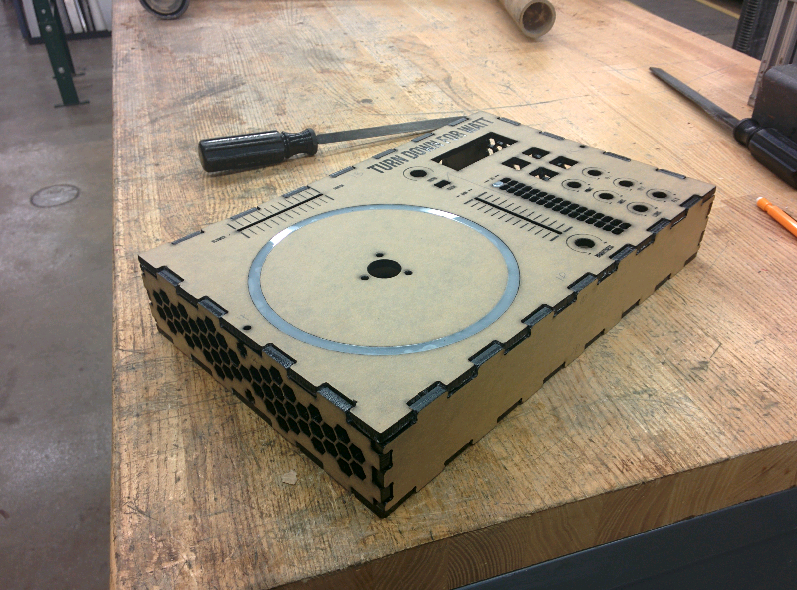
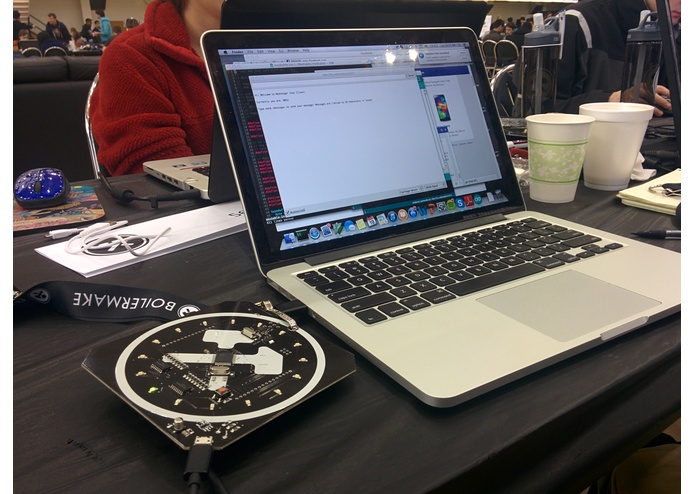

PROJECTS
A Helping Hand
Spring 2016
This was a project completed by me and three other team members for our senior design project, which then won 1st place in the Spark Challenge Design Showcase at the end the semester. "A Helping Hand" is a robotic hand designed to be able to translate text in to American Sign Language, as well as serve as a learning and testing tool for someone who does not know American Sign Language. It has 3 modes, demo mode, translate mode, and quiz mode. See more about the team project, my individual contributions, and a demonstration video here.

Turn Down For Watt
Spring 2015
For a microprocessor course, we completed a mini-project at the end of the semester. Turn Down for Watt is a DJ sound effects board that utilizes two 9S12C32 microcontrollers and a multi-threaded Raspberry Pi 2.0 Model B mini-computer running a stripped-down version of Raspbian Linux with custom-developed audio software. It can play back music files loaded by the user onto an SD or microSD card in WAV format, and allow the user to adjust the volume and speed/pitch of the playback. The user can switch between songs at will. The music can be outputted to any device that does not require an additional amplifier, e.g. headphones, stereo systems, recording equipment, other mixing boards, and amplified speakers.

Meshenger
Fall 2015
At BoilerMake Hackathon Fall 2015, I competed with a team of 4 and created a hack related to badges that were distributed at the hackathon. Using the ob board RF chip, we created a distributed mesh network chat client which communicates not over bluetooth, or wifi, but simply relaying the data packet from the badge to other badges within range. Learn more here.
Week 1 Assignment
Fall 2017
Check out this page I created for my week 1 assignment.